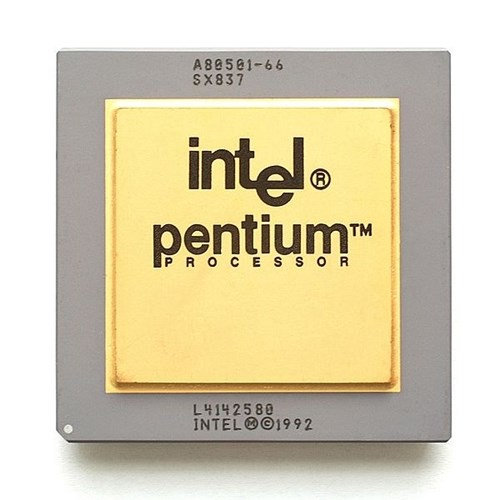
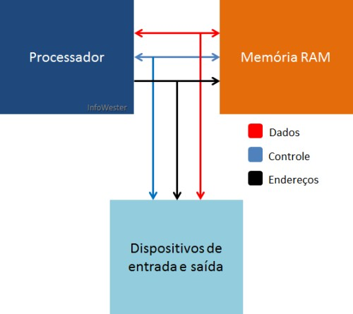

Processadores
Os processadores (ou CPU, de Central Processing Unit - Unidade Central de Processamento) são chips responsáveis pela execução de cálculos, decisões lógicas e instruções que resultam em todas as tarefas que um computador pode fazer. Por este motivo, são também referenciados como "cérebros" destas máquinas
 Fonte: www.tecmundo.com.br/historia/2157-a-historia-dos-processadores.htmClock de um processador
O clock é um pulso elétrico que sincroniza as atividades do computador. A cada “pulso de clock”, os dispositivos executam suas tarefas, param e aguardam o próximo ciclo de clock. A medição do clock é feita em hertz (Hz).
Esta medida indica o número de ciclos que ocorre dentro de uma determinada medida de tempo – para o computador, é adotada a medida em segundos.
Memória
São todos os dispositivos que permitem a um computador guardar dados temporariamente ou permanentemente.
Memória RAM
Esse tipo de memória, é a memória principal do sistema. Toda vez que você abre um novo programa, ele é carregado na RAM, e ele ganha um pedacinho dela para o programa trabalhar temporariamente, e assim o CPU enquanto executa o processo vai acessando a memória RAM para obter os dados e operações do programa. Entretanto, no momento em que você desliga sua máquina ela se apaga, pois se trata de uma memória volátil.
Principais modelos:
- SDR-SDRAM
- DDR-SDRAM
- DDR2
- DDR3
Barramento
De maneira geral, os barramentos são responsáveis pela interligação e comunicação dos dispositivos em um computador.
O desempenho do barramento é medido pela sua largura de banda (quantidade de bits que podem ser transmitidos ao mesmo tempo), geralmente potências de dois: 8 bits, 16 bits, 32 bits, 64 bits, etc; e também pela velocidade da transmissão medida em bps (bits por segundo) por exemplo: 10 bps, 160 Kbps, 100 Mbps, 1 Gbps etc.
 Fonte: www.infowester.com/processadores.php